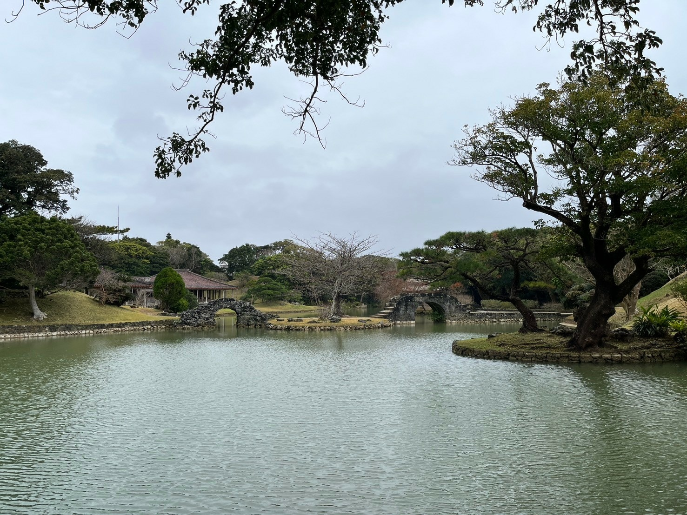
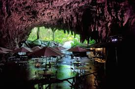
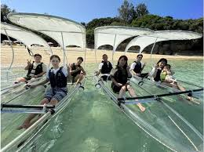
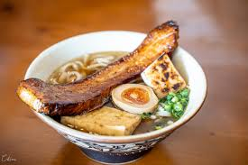
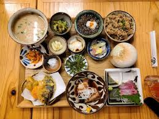
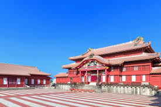
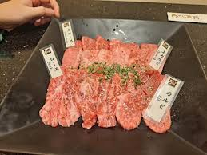
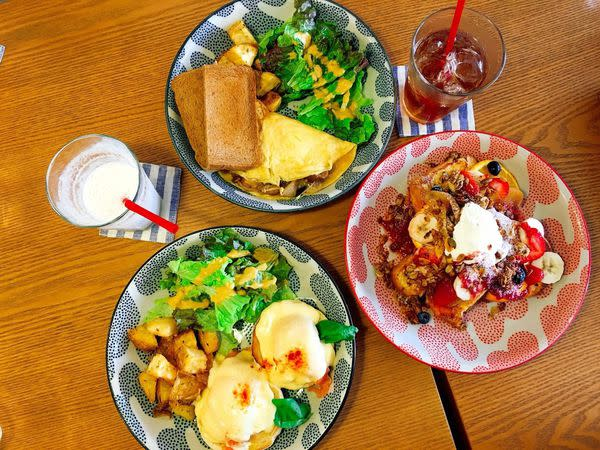

📌 預訂資訊
已購買
台灣 - 那霸機票 (9/22 8:00起飛)
已購買
那霸 - 台灣機票 (9/26 16:45起飛)
已預訂
那覇東急REI飯店 (9/22 15:00入住 ~ 9/26 10:00退房) -> 虹君 Booking
已預訂
租車 (9/22 12:00取車～9/25 19:00還車) -> 虹君 gogoout
已購買
Gangala之谷 (9/23 10:00) -> 育聖 網頁
建議訂
玉泉洞門票 (9/23) -> 虹君 TRIP
建議訂
Yasaimakigushiya Gururi 居酒屋 (9/23 晚餐)
已購買
瀨底島玻璃獨木舟 (9/24 09:30) -> 育聖 ACTIVITY JAPAN
建議訂
沖繩美麗海水族館門票 (9/24)
建議訂
萬座毛門票 (9/24)
建議訂
燒肉 琉球之牛 (9/25 晚餐)
建議訂
C&C Breakfast (9/26 早餐)
必須買
旅平險
必須買
eSIM
Day 1｜2026/09/22(星期二)
✈️ 去程：桃園機場 → 那霸機場
🚗 租車：12:00 取車
🏙️ 市區觀光：牧志市場 / 識名園 / 國際通
🌅 海景：瀨長島夕陽
🏨 住宿：那覇東急REI飯店
05:39
✈️ 08:00 起飛
中華航空 CI120
停留 02時21分
12:00
預訂12:00取車
停留 00時30分
14:46
停留 01時30分

Day 2｜2026/09/23(星期三)
🌿 自然探險：Gangala之谷 / 玉泉洞（鐘乳石洞）
🪖 歷史景點：沖繩戰跡國定公園
🍽️ 美食：Yasaimakigushiya Gururi
🏙️ 晚間：國際通散步
🏨 住宿：那覇東急REI飯店
09:26
預約10:00場次
波比看世界介紹
停留 02時00分

Day 3｜2026/09/24(星期四)
🤿 海上活動：瀨底島玻璃獨木舟
🍴 午餐：島豚料理 / 海邦丸（二選一）
🐠 主景點：沖繩美麗海水族館（超重點）
🌄 海景：萬座毛夕陽
🛍️ 購物：AEON Mall Rycom / 晚餐
🏨 住宿：那覇東急REI飯店
08:57
預約09:30場次
介紹
停留 01時30分

11:10
停留 01時00分


12:30
鯨鯊餵食秀 -> 15:00 / 17:00 兩場
海豚秀 -> 10:30 / 11:30 / 13:00 / 15:00 / 17:00 共五場
官網
節目表
波比看世界介紹
停留 04時00分
Day 4｜2026/09/25(星期五)
🛍️ 購物：永旺北谷 / 美國村
🏯 文化景點：首里城
🍖 晚餐：燒肉 琉球之牛（國際通）
🚗 行程尾聲：租車歸還
🏨 住宿：那覇東急REI飯店
14:00
好運日本行介紹
停留 04時00分

19:20
停留 02時00分

Day 5｜2026/09/26(星期六)
🍳 早餐：C&C Breakfast
⛩️ 文化景點：波上宮
✈️ 回程：那霸機場 → 桃園機場
08:00
停留 02時00分

12:30
✈️ 16:45 起飛
樂桃航空 MM929
停留 04時00分